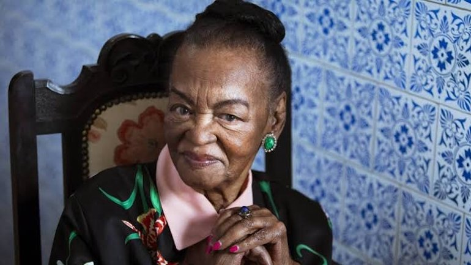

Conheça esta Maravilhosa
Ruth Pinto de Souza (Rio de Janeiro, 12 de maio de 1921 — Rio de Janeiro, 28 de julho de 2019) foi uma atriz brasileira. Considerada uma das grandes damas da dramaturgia brasileira e a primeira grande referência para artistas negros na televisão por seus papéis notáveis.
Ruth destacou-se por ser a primeira atriz negra a protagonizar uma telenovela na Rede Globo em A Cabana do Pai Tomás (1969) — e a segunda na televisão brasileira, após Yolanda Braga, em A Cor da Sua Pele (1965) na TV Tupi — além da primeira artista brasileira indicada ao prêmio de melhor atriz em um festival internacional de cinema, por seu trabalho em Sinhá Moça (1954) no Festival de Veneza.
Sua História
Infância
Ruth de Souza nasceu no subúrbio carioca, no bairro do Engenho de Dentro. Mudou-se para uma fazenda em Porto do Marinho, em Minas Gerais onde viveu até os nove anos de idade. Com a morte do pai, ela e a mãe voltaram a morar no Rio, em uma vila no bairro de Copacabana.
Carreira
Ruth de Souza interessou-se pelo teatro ainda na infância. Em 1945 adentrou ao grupo Teatro Experimental do Negro, sendo o primeiro grupo de teatro negro a subir ao palco do Teatro Municipal do Rio de Janeiro com a peça O Imperador Jones, de Eugênio O'Neill.
Em 1959, viveu outro momento especial no palco, ao protagonizar Oração para uma Negra, de William Faulkner. Em 1948 ganhou uma bolsa de estudos da Fundação Rockefeller, por indicação de Paschoal Carlos Magno, passando um ano nos Estados Unidos, estudando na Universidade Haward, e também na Academia Nacional do Teatro, em Nova Iorque. No mesmo ano estreou no cinema, no filme Terra Violenta. Em 1953, conquistou reconhecimento nacional por sua participação no filme Sinhá Moça, que resultou em ser a primeira artista brasileira indicada a um prêmio internacional de cinema, no Festival de Veneza de 1954, na categoria de Melhor Atriz.
Na década de 1950, começa a participar de radionovelas e a atuar nos teleteatros da TV Tupi e teatros. Por sua atuação em 1959 na peça "Oração para uma Negra", de William Faulkner com o grupo Nydia Lícia–Sérgio Cardoso. recebeu os principais prêmios da temporada. Na década seguinte, alcança o sucesso na televisão com a telenovela A Deusa Vencida, de Ivani Ribeiro, na TV Excelsior. Em 1969 se tornou a primeira atriz negra a protagonizar uma telenovela na Rede Globo em A Cabana do Pai Tomás — e a segunda na televisão brasileira, após Yolanda Braga, em A Cor da Sua Pele (1965) na TV Tupi.
Em 2016, a atriz foi homenageada no Centro Cultural Banco do Brasil, em Brasília. Em 2019 foi novamente homenageada, agora no carnaval carioca pela escola de samba Acadêmicos de Santa Cruz, com o enredo Ruth de Souza – Senhora Liberdade. Abre as Asas Sobre Nós.
.jpeg)
Morte
A atriz faleceu em 28 de julho de 2019, aos 98 anos, quando internada no centro de Tratamento Intensivo do Hospital Copa D'Or, em Copacabana, na Zona Sul do Rio, em tratamento de uma pneumonia.